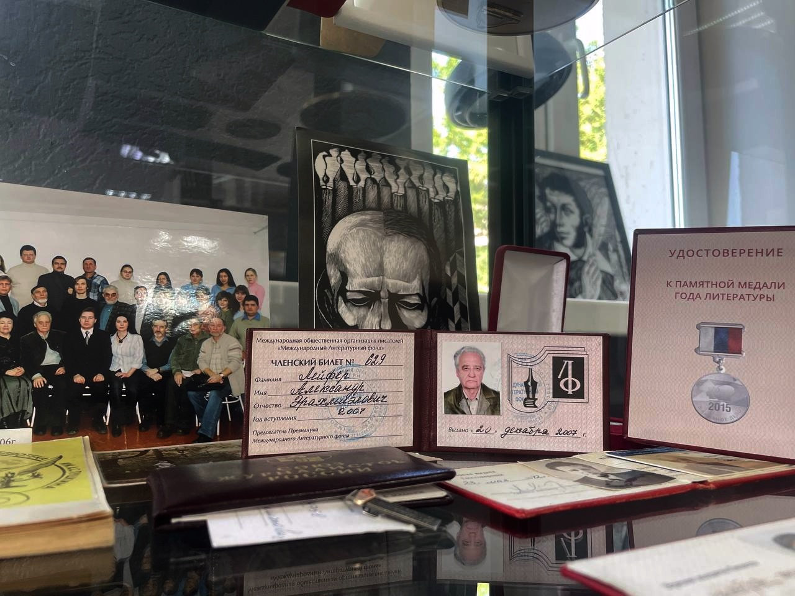

Виртуальная экскурсия по Кабинету писателя

Александр Эрахмиэлович Лейфер (1943 - 2017) - коренной омич, советский и российский журналист и писатель, председатель Омской областной организации Союза российских писателей (1993 - 2017), Заслуженный работник культуры РФ (2007)
Кабинет писателя

В 2021 г. библиотека получила имя омского писателя и журналиста, Александра Лейфера, на протяжении четверти века, возглавлявшего Омское региональное отделение Общероссийской общественной организации "Союз российских писателей". В зале художественной литературы ему посвящена постоянно действующая экспозиция "Кабинет писателя". Хотелось создать пространство, напоминающее рабочее место писателя. Здесь можно заметить гармоничное сочетание условного и настоящего. Часы на стене действительно идут. Этажерка, пусть и современных очертаний, полна подлинных предметов. Стул из 70-80 гг. прошлого века. На столе оргстекло, под которое так удобно было складывать фотографии, заметки, листочки. Помимо этого, здесь также можно увидеть и личные вещи Александра Лейфера
Биография
Мать
Зинаида Васильевна Болтова-Лейфер (1908-1975) - закончила Худпром - Омский художественно-промышленный техникум им. Врубеля, получила специальность художника текстильной промышленностион. Вначале работала не по специальности, а на различных предприятиях Омска, связанных с легкой промышленностью.
Накануне войны её приглашают преподавать рисование в Омское казахское училище, где она и познакомилась с Эрахмиэлем Яковлевичем Лейфером.
Отец
Отец - Эрахмиэлэль Яковлевич Лейфер (1911–1995) – окончил лесохимический техникум в Бийске, после чего поступил на химический факультет Ленинградского университета. Однако перевёлся в Омский педагогический институт, так как одному было тяжело учиться вдали от дома. После окончания института он сначала преподавал в школе, а затем стал завучем Казахского педучилища, где вёл физику. В 1958 году, сразу же после учреждения звания заслуженного учителя,был в числе первых четверых в Омске этого звания удостоен. В начале 60-х годов организовалось музыкально-педагогическое училище (оно и сейчас находится там же - на ул. Л. Чайкиной). Учитывая то, что отец был музыкантом-любителем, его назначили завучем этого училища, там он и проработал до пенсии
27 декабря 1943г. в семье омского преподавателя Эрахмиэля Яковлевича и его жены Зинаиды Васильевны Лейфер родился сын Александр
1951-1962 Учился в школах №13 и №65 города Омска
Детство и юность
Сохранилась тетрадь с воспоминания юного Саши Лейфера о бабушке.
Цитата:
«Бабушка очень меня любит. Но не в её привычках ежеминутно показывать свои чувства. Она делает это
иначе:
– Ты, знаешь, Шура, Буська (кот), как ты придёшь – сам не свой. Видно радуется, не иначе.
А вот как уйдёшь, так и ходит из угла в угол, так и ходит. Походит, походит, да ко мне: «Мяв!» –
где, дескать, Шура? Или сядет на подоконник, на улице ребята играют, так ведь вытянется весь – нет
ли тебя там.
И, немного помолчав, добавляет со вздохом:
– Да, вот ведь кошка, и тоже туда же – тоскует».

С детства в Александре чувствовалось стремление к профессии журналиста. На фотографии домашняя газета "Мой голос №2", выпущенная им в 1 классе с настоящими рубриками ("Читал сам", "Что я умею") А умел он немало: игрушки сделал, наклеивал картинки, штопал чулок.
Прекрасные, детские, наивные события.
Профессиональная деятельность
В 1962 г., Александр Лейфер получил военный билет. Интерес к литературе, сформированный под влиянием домашней библиотеки и "хрущевской оттепели", привёл его к решению поступить на отделение журналистики Казанского университета. Во время учёбы он активно сотрудничал с местными газетами - университетской многотиражной "Ленинец", "Комсомольцем Татарии" и "Советской Татарией". Пробовал писать рассказы. Преддипломную практику проходил в "Омской правде", где вместе с женой Галиной получил предложение о работе после окончания университета. В 1967 году Лейфер начал работать в "Омской правде" младшим литсотрудником, а затем перешёл в отдел культуры газеты.
В 1972 г. уволился из "Омской правды". В последующие годы работал главным образом (хотя были и исключения) на договорных началах, т. е. не входя в штат того или иного СМИ. Был литературным консультантом газет "Молодой сибиряк" и "Вечерний Омск", много сотрудничал с Омским радио и телевидением (передачи "Зовут "Сибирские огни", "Сибирская литература: день сегодняшний", "Дедушкина библиотека", "Из литературного прошлого Омска", "Живое прошлое" - вёл и писал эти передачи по нескольку лет). Много дала штатная, хотя и непродолжительная (1980-1983 гг.) работа в Омском краеведческом музее, где организовывали нынешний Литературный музей им. Ф. М. Достоевского. Печатался в журналах, альманахах и коллективных сборниках, выходивших не только в Омске, но и в Москве, Новосибирске, Иркутске, Екатеринбурге, Красноярске, Кемерове.
В 1992 г. был принят в Союз российских писателей. При основании Омского отделения Союза российских писателей (1993) был избран его ответственным секретарем (председателем). Был редактором-составителем коллективных сборников "Складчина". Член редколлегии всероссийского журнала (выходящего в Красноярске) "День и Ночь", где часто печатаются омские литераторы.
В 2007 году Александру Лейферу было присвоено звание "Заслуженный работник культуры РФ" и внесено его имя в Книгу почета деятелей культуры города Омска. В 2011 году он был удостоен Почетной грамоты Министерства культуры РФ, медали "За вклад в развитие омского краеведения" и статуэтки "Признание года", а в 2015 году – медали "За особый вклад в книжное дело".
Однако, подлинным свидетельством признания таланта и личности Александра Лейфера стала народная память, запечатленная в изданном в 2018 г. сборнике воспоминаний "Хочу хоть минуты покоя. Всё было – бои и пиры…", содержащем QR-код для доступа к его произведениям в "Омской электронной библиотеке". Он был не просто участником культурной жизни, но и ее двигателем, инициатором создания Литературного музея им. Ф.М. Достоевского и бессменным руководителем Омского отделения Союза российских писателей с 1993 г., где объединял и поддерживал талантливых авторов. Благодаря его усилиям в 1997 г. в Омске была учреждена молодежная литературная премия им. Ф.М. Достоевского. Он также стоял у истоков альманаха "Складчина", оставаясь его редактором более двух десятилетий. Лейфер писал книги о людях, чья жизнь была связана с Омском, мастерски соединяя историческую достоверность и художественный вымысел, за что был удостоен премии Администрации Омской области за книгу "Вокруг Достоевского и другие очерки" (1997).
Фотогалерея